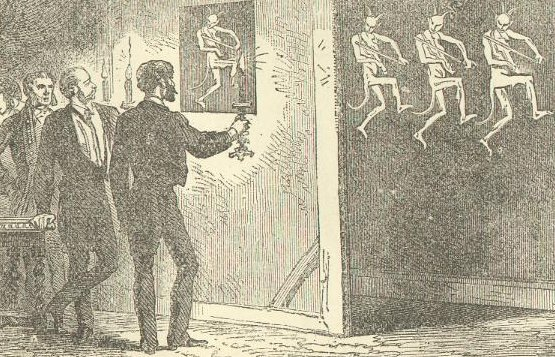

Wednesday, August the 18th, 2004
back to: title, date or indexes
Not since the glory days of the Festival of Argumentative Music at Ülm has so much excitement been generated in the world of sonic frolic! Last week saw the inaugural Loopy Copse Surly Improv Din Weekend. Over forty performers—including The Crumpled Ships, Croaking Ted Bilge, and Dull Threnody—took to the stage for forty-eight hours of caterwauling, deafening grinding noises, and inspired “deconstructions” of the Midge Ure Songbook. Here is an exciting picture of the opening night ceremony:
